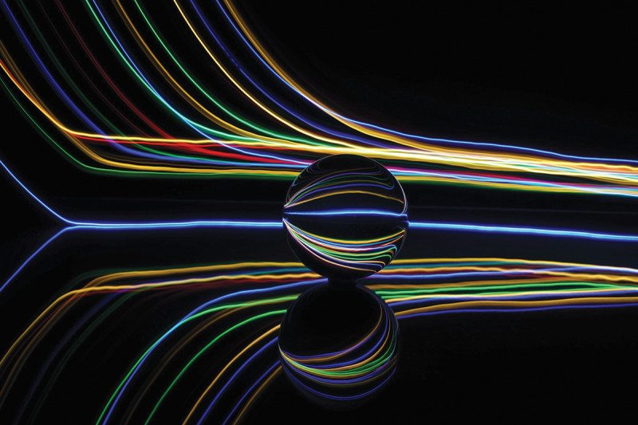
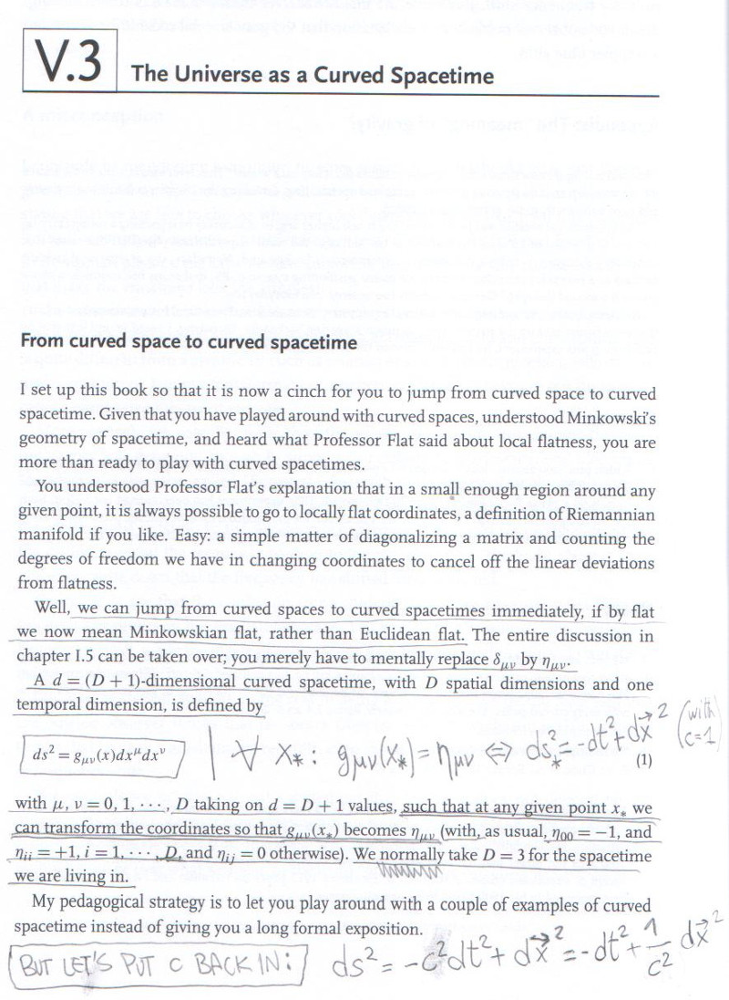
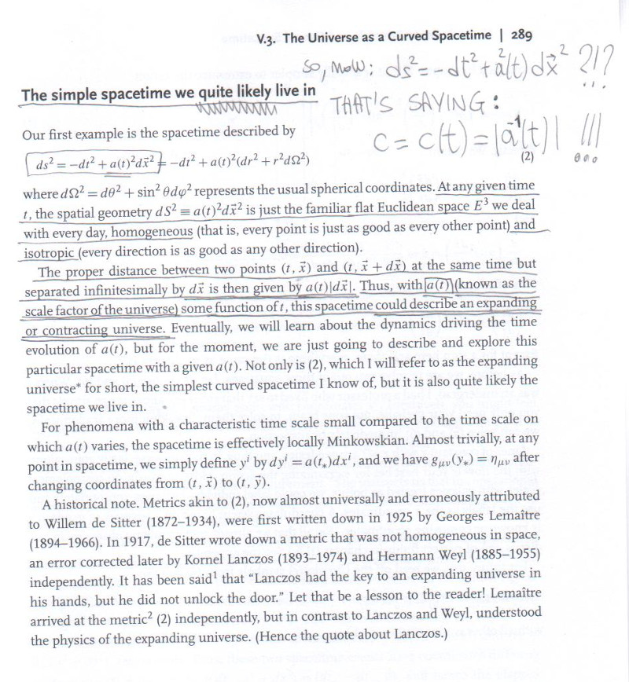

|  | Maven project-info (temp) What's RPF and how I got here Rovelli's recap commented Why from an IT perspective |
Here's another weird news I tried to discuss about already, so I'm recapping it here.
This time I'm not commenting video lectures, or the article itself, but rather the whole approach to the "expanding universe": I'll be commenting the introduction to this subject, as available in the book Einstein Gravity in a Nutshell, but since it will be around "how they play with the metrics", it would be applicable to any books, video lecture, etc which does the same (i.e. Susskind in the theoretical minimum).
The article itself starts like this: "It's supposed to be the most fundamental constant in physics, but the speed of light may not always have been the same. This twist on a controversial idea could overturn our standard cosmological wisdom" - could you resist such a temptation?
Indeed, when reading Zee's book, I could not retain from commenting it
this way:

and:

Now, compare where "c" goes in the "flat metrics" and where "a(t)"
goes in the "expanding metrics": clearly c=1/a(t), which
OBVIOUSLY means c=c(t).
So, if a(t) "increases with
time", then c(t)=1/a(t) "decreases with time", as the news was
saying.
It's REFACTORING again: the external behavior won't change, the internal workings will.
How to get the speed of light to slow down? Try "dilute" the "vacuum energy" aka "cosmological constant", like if it were the kinetical energy of a gravitational gas: it's not a gas expanding in space, it's not either space itself expanding who-knows-where, it's just condensing into mass/energy.
Just like a sealed bottle of water when you cool it down: the water vapor gets condensend into water (more water moleculas falling down into the water than ones jumping out of it), which acts on the "n" of pV=nRT: it's not just lower temperature bringing lower pressure, it's also "less n".
At the end, aren't all particles just "ripples in the field(s)"?
With a "slower c", in a unit of time light would run for a length, which will be the "current unit of space", using the Caesium133 definition, and it would be "smaller than the previous unit of space": it would look like space is expanding, like the current approach goes.
The external behaviour is not changing... the internal workings (a gas getting diluted and supporting slower waves) is getting more meaningful (compared to nonsense like "space itself expanding")
TODOs: